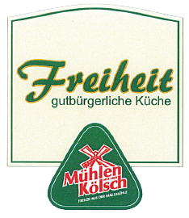
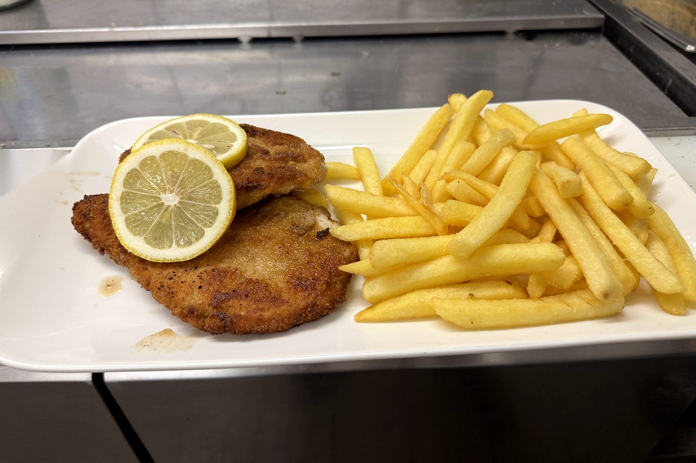
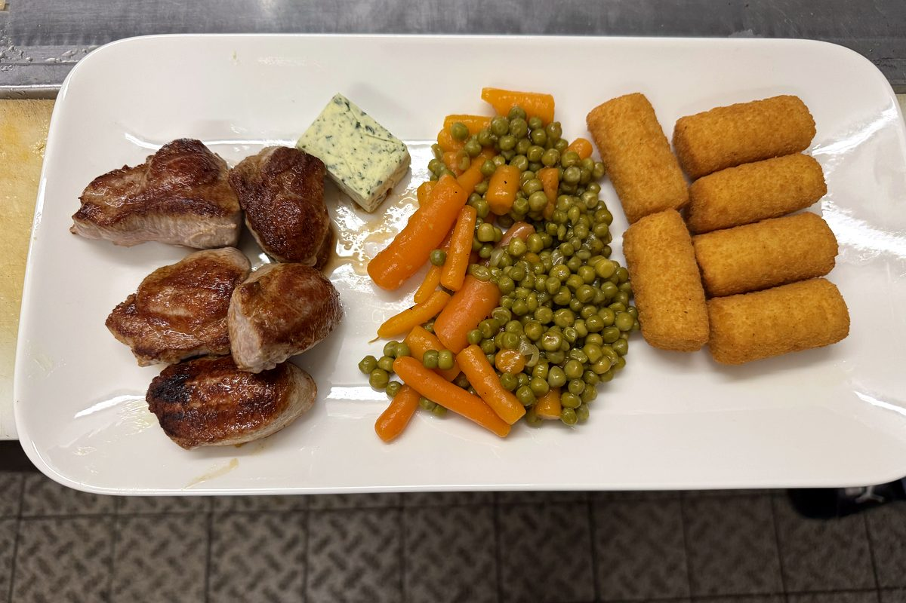
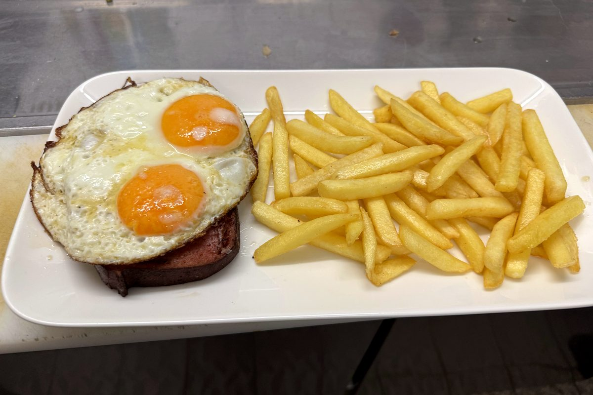
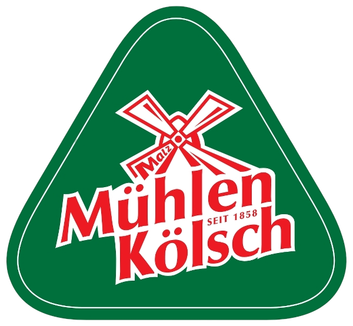

Ob ihr zum ersten Mal bei uns seid oder schon seit Jahren zu Gästen der Freiheit gehört – wir heißen euch herzlich willkommen!
Seit November 2026 ist die Freiheit unter neuem Pächter wieder eröffnet und wir freuen uns riesig, euch bei uns begrüßen zu dürfen. Bei uns gibt es ehrliche, gutbürgerliche Küche und frisch gezapftes Mühlen Kölsch.
Unser Team gibt jeden Tag sein Bestes, damit ihr euch wohlfühlt und eine schöne Zeit bei uns erlebt. Habt ihr Fragen oder Wünsche? Sprecht uns einfach an – wir sind für euch da.
Rund 60 Plätze unter freiem Himmel
Die wichtigen Spiele live bei uns
Alle Spiele live auf dem Bildschirm
Bezahlt bequem bar oder mit Karte

Vom klassischen Wiener Art bis zum Freiheit-Schnitzel – auf Wunsch auch von der Pute.

Rumpsteak, Grillteller, Boeuf Stroganoff und Schweinefilet.

Currywurst, Toasts, Gulaschsuppe – für den kleinen Hunger zum Kölsch.

Bei uns kommt Mühlen Kölsch ins Glas – auch im 10-Liter-Pitter für die ganze Runde.
| Montag – Samstag | 11:00 – 24:00 Uhr |
| Sonntag | 12:00 – 24:00 Uhr |
| Küche täglich | 12:00 – 21:00 Uhr |